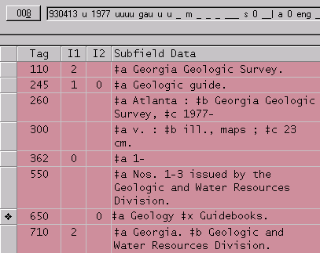

Contact
Princeton University Cataloging Documentation
Contact |
Princeton University Cataloging Documentation |
Serials
What goes where? See also |
Geology field trip guidebooksNew Cataloging - Adding Volumes Geology field trip guidebooks are cataloged for the Geology Library (SG) as serials. Most of them do have monographic titles. Monographic catalogers have been instructed to watch for them coming through as monographs. These field trip guidebooks are listed in: Union list of geologic field trip guidebooks of North America. Entries are arranged alphabetically by corporate body. The Geology Library will send over batches of field trip guidebooks along with a photocopy from the appropriate page of the above mentioned union list, requesting that the title be cataloged. Although there may be some RLIN copy for these serials, they should be cataloged originally to the minimum level below: • Minimal level cataloging, CC = 9994 • DCF: i • 110: Enter under the name of the association, society, etc. NACO the corporate body if necessary. • 245: Use the title given in the entry in the Union list, even though this title may not be on the issues in hand. • 246: Titles may vary from issue to issue. Note these variations in 246's. • 300: v. :‡bill., maps ;‡c[size in cm.] • 362: Beginning date, vol. information is taken from the Union list. • 500: "Description based on:" note should not be added. • 6xx: Only one subject heading is needed: Geology‡vGuidebooks. • 7xx: Do not make added entries for individual authors, editors or other named bodies. • Call number: usually in the QE1 area. Always shelflist. • Holdings: use vol./no. if available. Otherwise use year. Do not use months/year unless more than one issue in a single year. NOTE: If the corporate body changes its name, a title change will be necessary. In this case continue to use the previous title that is listed in the Union list. • Holdings: See above under New Cataloging. • Add 246's to existing record if necessary to account for varying titles. • If the corporate body changes name, it will be a title change (see instructions under New Cataloging). Example of cataloged record:  |
| ©2008 Princeton University Last Modified 02/21/2006 |